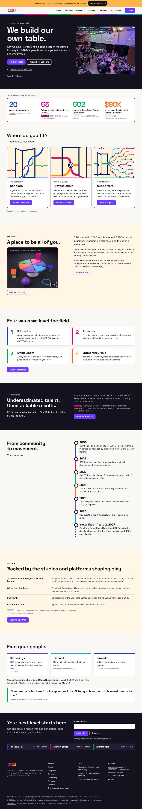
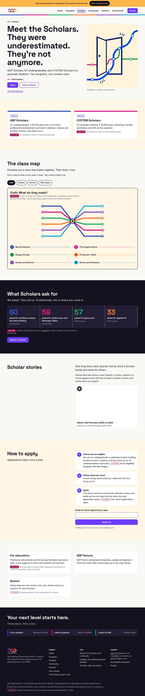
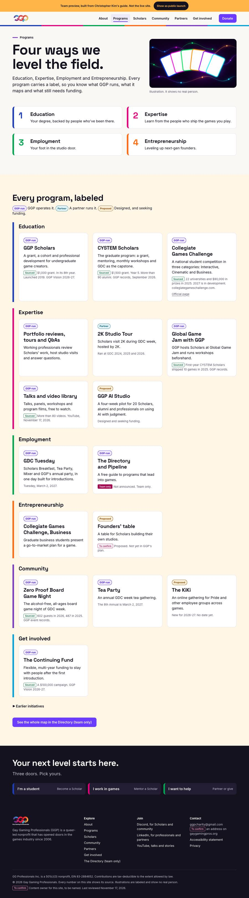
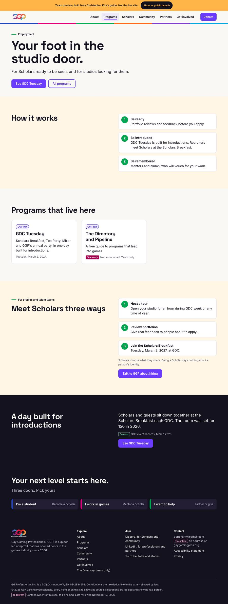
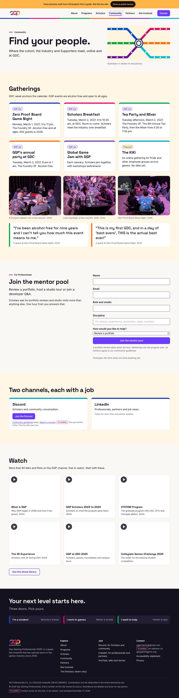
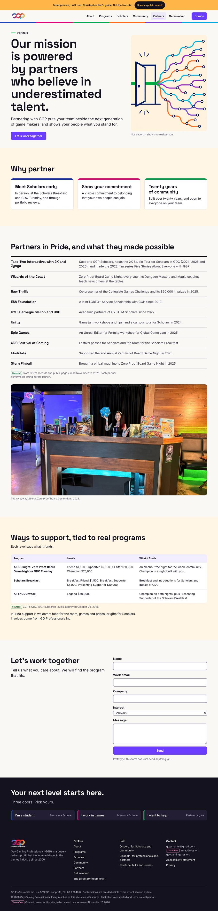
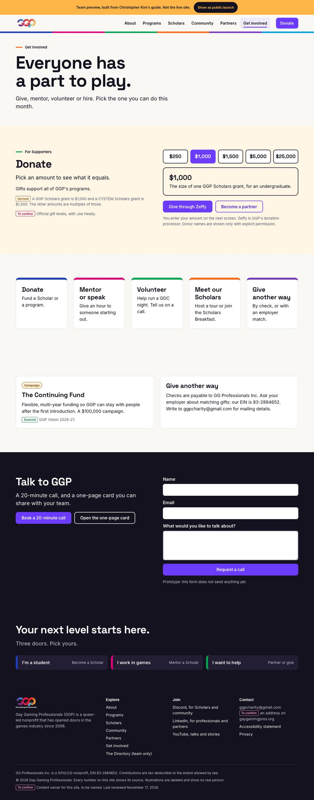
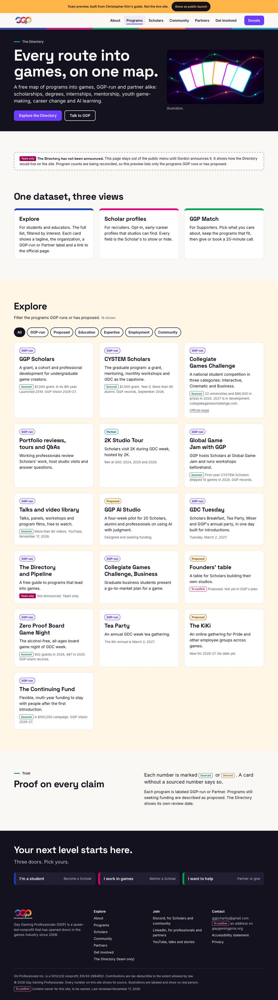
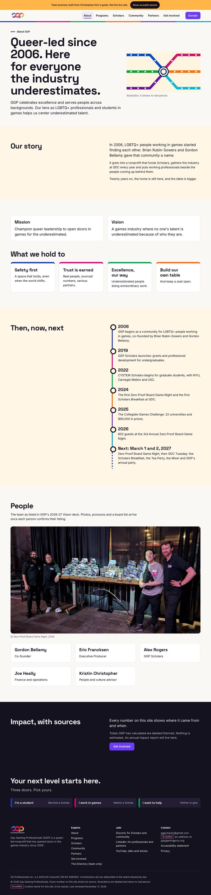
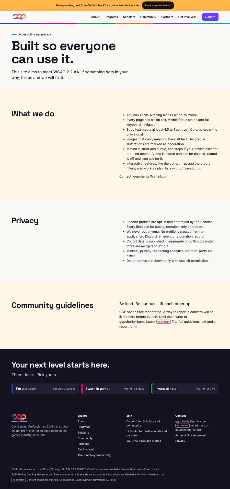

Home
Tells the whole story in the guide's order: Safety, Trust, Excellence, with the three doors near the top.

Scholars
A class that builds together, not a list of winners. Nothing here names a Scholar.

Programs
Every program carries a label, grouped by E in colored rows.

Employment (one of four E pages)
The same template on each E page: promise, how it works, programs, proof, one action.

Community
Where the class, the industry and Supporters meet.

Partners
Built so a supporter can see outcomes and levels in one pass.

Get involved
Donate comes first on this page, so a phone donor reaches Zeffy in two taps.

The Directory (team only)
Kept out of the public menu and hidden in public view, because the Directory is not announced.

About
The approved identity line leads: excellence first, then the lens.

Accessibility and privacy
The guide's governance rules, written as promises.

What eight critiques changed
Each critique was a simulation written in that person's register by a reviewer who read the guide, the pages and GGP's records.
| In the register of | Main points raised | What changed |
|---|---|---|
| Christopher Kim | Follows the guide's order, menu and labels. Wanted one closing band on Home, a source named on every chip, and no number that is an estimate. | Home now ends in one band. Chips name their source. "About 150" was removed. |
| Gordon Bellamy | The Directory was showing in too many places. The class map said "lines that cross" above parallel bars. Too many identical cards. "Interesting, not yet fun." | A team and public switch hides the Directory for review, and a separate public export removes it. The map now has lines that cross and light up. Programs are grouped in colored rows. The open seat at the table is something to tap. |
| Eric Francksen | Unannounced numbers and the Directory must not ship. Five forms have no backend. The Breakfast room and Tea Party time are not confirmed. | Public view hides them. Every form says it sends nothing yet. Event wording leaves the room and time open. |
| Joe Heally | Gift amounts read as restricted gifts. Donate took too many taps on a phone. | Amounts now read "the size of one grant" and "gifts support all of GGP's programs". Donate is the first section on its page. |
| Kristin Christopher | A talent team could not tell what to do. "Be placed" promised too much. Scholars read as a product. | A "For studios and talent teams" block with three ways in. "Be placed" is gone. Wording is now "meet Scholars early, on their terms". |
| Bec Godsey | No apply date. Discord was hard to find. The Discord tile was broken on phones. | Apply now says this year's class is chosen and offers an email reminder. Discord is linked from the Scholars page. The tile is fixed. |
| Alex Rogers | "A mentor for every Scholar" is not on record. The Schools lens could identify people. | Program descriptions now match the records: curriculum, reviews, tours. The Schools lens is held back. |
| Alan Lewis | His company's support was overstated. Internal notes were on the page. | The line now lists only what is on record, with years. Public view strips every internal note. |